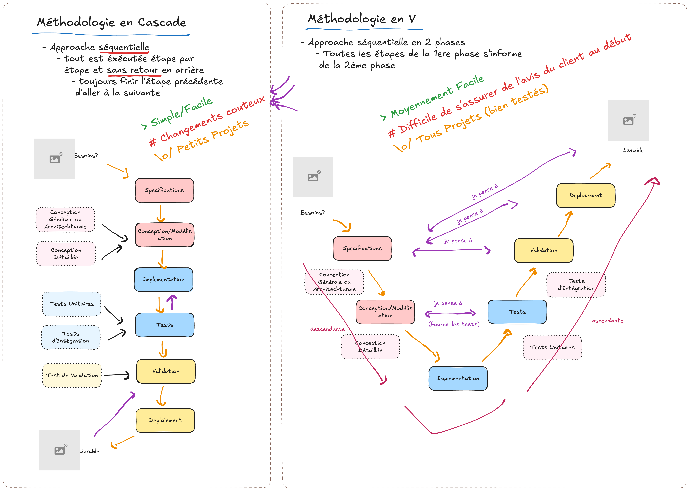

Chapitre 9 : Récapitulatif comparatif
Ce chapitre synthétise les méthodologies vues précédemment. Toutes reprennent les mêmes phases ; elles diffèrent par leur organisation, leur tolérance au changement et leur gestion du risque.
{kind=link}

De la cascade au modèle en V : anticiper la validation et les tests.
Tableau comparatif synthétique
Méthode |
Quoi ? (What?) |
Bon pour (Good for) |
Défis (Challenges) |
Exemples |
|---|---|---|---|---|
Cascade |
En séquence, l’une après l’autre (pas de retour en arrière) |
Petits projets ; pas de contrainte forte sur l’équipe/le délai |
Le travail en séquence ⇒ changements coûteux (temps, ressources) |
Projet mono-module (logiciel de caisse) ; site statique |
V |
En séquence, mais en anticipant la fin (tests & validation) |
Tout projet (taille moyenne) ; pour obtenir un logiciel bien testé |
Faire un bon travail en amont ⇒ inclure le client dans la boucle même si non obligatoire |
Specs claires, livraisons critiques (e-commerce, embarqué temps réel) |
Itératif |
Découper le projet en petits morceaux (itérations, prototypes, cycles) |
Projets moyens ; projets découpables ; quand garder le client dans la boucle est critique |
Découper + risque de hors-périmètre (changements répétés du client) |
Projets multi-modules (logiciel de gestion : RH, comptabilité/ERP) |
Spirale |
Méthode itérative avec gestion des risques (cycles) |
Gros projets / complexes ; projets où tout risque (dont le temps) est critique |
Documentation coûteuse ; gestion des risques compliquée et coûteuse ⇒ informer le client des risques |
Projets à haut risque (hôpital, sécurité) ; R&D ; projets d’IA |
Agile-Scrum |
Méthode itérative à itérations de taille fixe (sprints) + gestion de projet + satisfaction client |
Projets moyens/grands ; quand garder le client dans la boucle est critique |
Équipe bien formée aux cérémonies ; risques hors-périmètre/hors-délai ; défis de l’itératif |
Projets bien planifiés (livrables datés, changements flexibles) ; ERP |
Agile-Kanban |
Méthode itérative à flux continu (visuel) |
Projets aux specs floues au départ ; projets à croissance graduelle |
Défis de l’itératif ; devient chaotique sans discipline ; engagement de long terme |
Logiciel d’entreprise en continu, maintenance ; bureautique (Word, Excel) |
Tip
Comment choisir ? Posez-vous trois questions : (1) les specs sont-elles stables ou évolutives ? (2) le client doit-il être impliqué en continu ? (3) quel est le niveau de risque et de criticité ? Les réponses pointent naturellement vers l’une des méthodes ci-dessus.
Pour aller plus loin
Testez vos connaissances avec les QCM interactifs, puis préparez votre projet.